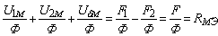

5.2.4.4. Закон Ома для неоднородной магнитной цепи
Поделив левую и правую части уравнения (5.11) второго закона Кирхгофа на магнитный поток Ф, получим закон Ома для неоднородной магнитной цепи:
 или Ф = F / Rмэ,(5.12)
где Rмэ = R1м + R2м + Rδм – эквивалентное магнитное сопротивление цепи:
R1м = l1м / (µµ0S1) = ƒ(H); R2м = l2м / (µµ0S2) = ƒ(H); Rδм = δ / (µ0Sδ) = δ / (4π10-7Sδ) = 8·105δ / Sδ;
Sδ ≈ S2 или Sδ ≈ (1,1...1,2) S2, м2; δ – воздушный зазор, м.
По аналогии со схемой замещения электрической цепи неоднородную магнитную цепь представляют в виде схемы замещения (рис. 5.14б), в которой МДС F аналогична ЭДС Е электрической цепи, магнитные напряжения Ukм между концами участков ферромагнетиков или воздушных зазоров аналогичны напряжениям Uk ветвей электрической цепи, магнитный поток Ф – току I, а магнитные линейные и нелинейные сопротивления Rkм – электрическим сопротивлениям Rk. Из схемы замещения и закона Ома следует, что с уменьшением магнитного сопротивления магнитопровода R1м + R2м увеличивается магнитное напряжение Uδм и магнитная индукция Вδ в воздушном зазоре.


Магнитные схемы замещения удобны тем, что они позволяют проводить анализ электромагнитных устройств, используя все методы (законов Кирхгофа, эквивалентного генератора и др.), разработанные для нелинейных электрических цепей постоянного тока.